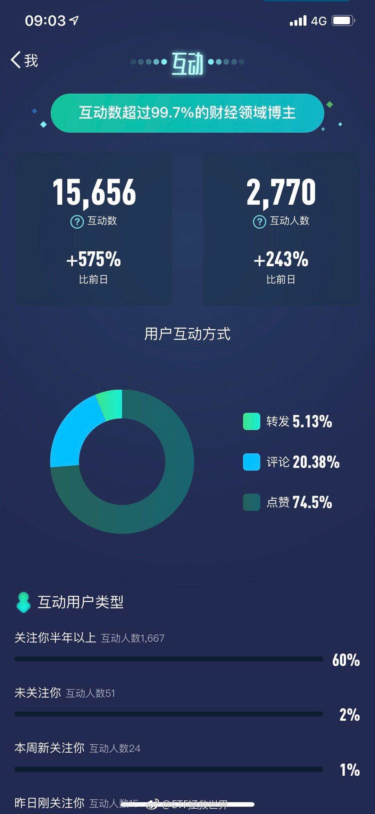
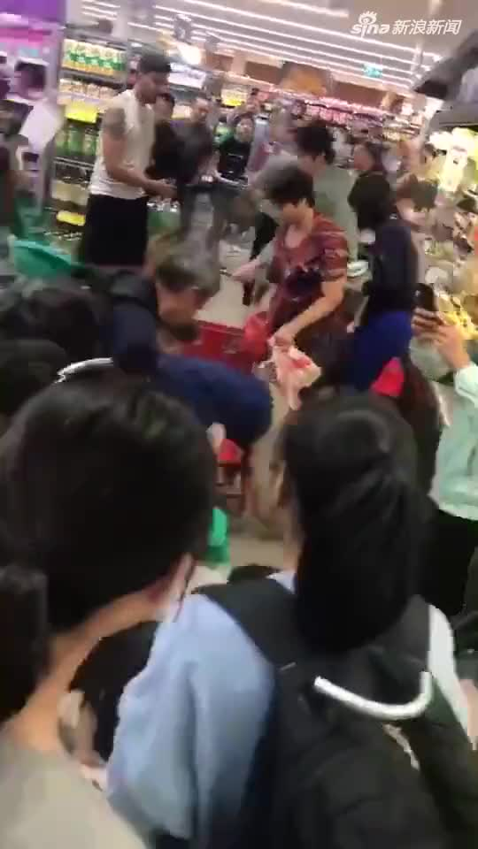

回复@菡园12580:所以我们高位清仓了，带着利润把筹码交给别人潇洒离开。现在是准备跌下去买回来。一个品种交易价值和长期价值是两回事。何况，未来未必如大多数人所预料//@菡园12580:2018年底 美国在75年来首次成为原油净出口国 实现能源自给@ETF拯救世界:最后的零点几真难超越啊。 
做空有一个关键点：时间你预测对了走势，但是时间不给你面子，你也会输的很惨。还有一点：你永远无法理解群众的疯狂程度。这两者叠加，让做空风险非常大。做空不是不能做，要有技巧的做。保证不死，还能吃到收益。我喜欢可以计算胜率的品种。有些做空品种就可以精确计算，非常好。
回复@韭菜st:预告一下，下次发车会继续买。目前阶段，是攻守相宜的品种 评论配图 //@韭菜st:益达，社保在大手笔买转债，是什么因素？//@ETF拯救世界:回复@葫芦冲有倔酱:本人投资家训第一条，知道的朋友回答一下：//@葫芦冲有倔酱:问个小白问题，既然如此不看好美股，为何不做空美股@ETF拯救世界:美股不断新高的时候我不怕打脸
主要是他们小时候物质太匮乏了。已经深深的写入基因，屯东西，抢东西，不排队都是表现。现在的年轻人不愁吃穿，以后就不会这样了@新浪视频:【中国大爷大妈在澳洲超市趴地哄抢奶粉 外国小哥看呆了】昨晚，一段在墨尔本华人区Box Hill Woolworths超市冰柜区域旁拍的9秒视频在朋友圈被疯狂转发，一群大爷大妈在超市里哄抢奶粉，旁边的外国小哥都看呆了 视频：中国大爷大妈在澳洲超市趴地哄抢奶粉 当地人看呆了  12万次播放 00:08
回复@葫芦冲有倔酱:本人投资家训第一条，知道的朋友回答一下：//@葫芦冲有倔酱:问个小白问题，既然如此不看好美股，为何不做空美股//@ETF拯救世界:美股如果能从最高点回撤30%-50%买入，则5-10年收益率又可以保证@ETF拯救世界:美股不断新高的时候我不怕打脸